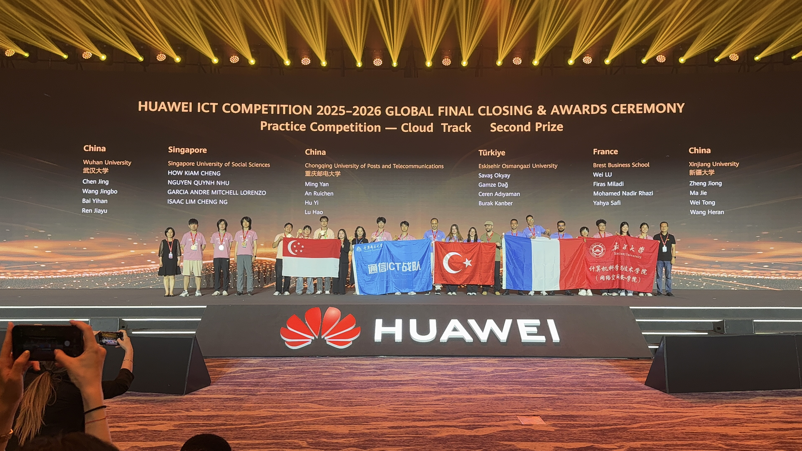

GLOBAL FINALS · CLOUD TRACK · JUNE 2026
Huawei ICT Competition 2025–2026
Our team earned Second Prize at the Global Final in Shenzhen after a ten-month journey from Singapore through the APAC regionals. Explore the story, team, and competition photos.
View Competition Story